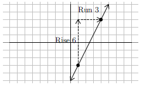
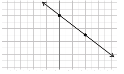

As we graph lines, we will want to be able to identify different properties of the lines we graph. One of the most important properties of a line is its slope. Slope is a measure of steepness. A line with a large slope, such as 25, is very steep. A line with a small slope, such as \(\frac{1}{10}\) is very flat. We will also use slope to describe the direction of the line. A line that rises from left to right will have a positive slope and a line that falls from left to right will have a negative slope. A horizontal line will have zero slope. As we measure steepness we are interested in how fast the line rises compared to how far the line runs. For this reason we will describe slope as the fraction \(\dfrac{\text{rise}}{\text{run}}\).
Rise would be a vertical change, or a change in the \(y\)-values. Run would be a horizontal change, or a change in the \(x\)-values. So another way to describe slope would be the fraction \(\frac{\text{change in } y}{\text{change in } x}\) . It turns out that if we have a graph we can draw vertical and horizontal lines from one point to another to make what is called a slope triangle. The sides of the slope triangle give us our slope. The following examples show graphs that we find the slope of using this idea.
|
To determine the slope of this line we will consider the rise, or vertical change, and the run, or horizontal change. Drawing these lines in makes a slope triangle that we can use to count from one point to the next. The graph goes down 4, right 6. This is rise - 4, run 6. As a fraction it would be \(\frac{-4}{6}\). Reduce the fraction to get \(\frac{-2}{3}\). The slope is negative indicating this line falls. |
| Slope = \(-\frac{2}{3}\) | Our Solution |
|  | To detemine the slope of this line, the rise is up 6, the run is right 3. Our slope is then written as a fraction, \(\frac{\text{rise}}{\text{run}}\) or \(\frac{6}{3}\). This fraction reduces to 2. This will be our positive slope, indicating this line rises. |
| Slope \(= 2\) | Our Solution |
There are two special lines that have unique slopes that we need to be aware of. They are illustrated in the following example.
 |
 |
| In this graph there is no rise, but the run is 3 units. This slope becomes \(\frac{0}{3}=0\). This line, and all horizontal lines have a zero slope. | This line has a rise of 5, but no run. The slope becomes \(\frac{5}{0}=\) undefined. This line, and all vertical lines, have no slope. |
As you can see there is a big difference between having a zero slope and having no slope or undefined slope. Remember, slope is a measure of steepness. The first slope is not steep at all, in fact it is flat. Therefore it has a zero slope. The second slope can't get any steeper. It is so steep that there is no number large enough to express how steep it is. This is an undefined slope.
We can find the slope of a line through two points without seeing the points on a graph. We can do this using a slope formula. If the rise is the change in \(y\) values, we can calculate this by subtracting the \(y\) values of a point. Similarly, if run is a change in the \(x\) values, we can calculate this by subtracting the \(x\) values of a point. In this way we get the following equation for slope:
The slope of a line through \((x_1, y_1)\) and \((x_2, y_2)\) is \(\dfrac{y_2-y_1}{x_2-x_1}\)
When mathematicians began working with slope, it was called the modular slope. For this reason we often represent the slope with the variable \(m\). Now we have the following for slope:
Slope \(=m=\dfrac{\text{rise}}{\text{run}}=\dfrac{\text{change in } y}{\text{change in }x} =\dfrac{y_2-y_1}{x_2-x_1}\)
As we subtract the \(y\) values and the \(x\) values when calculating slope it is important we subtract them in the same order. This process is shown in the following examples.
| Determine the slope between \((-4, 3)\) and \((2,-9)\) | Identify \(x_1, y_1, x_2, y_2\) |
| \((x_1, y_1)\) and \((x_2,y_2)\) | Use slope formula \(m=\dfrac{y_2-y_1}{x_2-x_1}\) |
| \(m=\dfrac{-9-3}{2-(-4)}\) | Simplify |
| \(m=\dfrac{-12}{6}\) | Reduce |
| \(m=-2\lt 0\), falls | Our Solution |
| Determine the slope between \((4, 6)\) and \((2,-1)\) | Identify \(x_1, y_1, x_2, y_2\) |
| \((x_1, y_1)\) and \((x_2,y_2)\) | Use slope formula \(m=\dfrac{y_2-y_1}{x_2-x_1}\) |
| \(m=\dfrac{-1-6}{2-4}\) | Simplify |
| \(m=\dfrac{-7}{-2}\) | Reduce, dividing both numerator and denominator by \(-1\) |
| \(m=\dfrac{7}{2}\gt 0\), rises | Our Solution |
We may come up against a problem that has a zero slope (horizontal line) or no slope (vertical line) just as with using the graphs.
| Determine the slope between \((-4, -1)\) and \((-4, -5)\) | Identify \(x_1, y_1, x_2, y_2\) |
| \((x_1, y_1)\) and \((x_2,y_2)\) | Use slope formula \(m=\dfrac{y_2-y_1}{x_2-x_1}\) |
| \(m=\dfrac{-5-(-1)}{-4-(-4)}\) | Simplify |
| \(m=\dfrac{-4}{0}\) | Can't divide by zero, undefined |
| \(m=\) does not exists (no slope), vertical | Our Solution |
| Determine the slope between \((3,1)\) and \((-2,1)\) | Identify \(x_1, y_1, x_2, y_2\) |
| \((x_1, y_1)\) and \((x_2,y_2)\) | Use slope formula \(m=\dfrac{y_2-y_1}{x_2-x_1}\) |
| \(m=\dfrac{1-1}{-2-3}\) | Simplify |
| \(m=\dfrac{0}{-5}\) | Reduce |
| \(m=0\), horizontal | Our Solution |
Note: There is a big difference between a zero slope and no slope.
When graphing a line, one method is to make a table of values. However, if we can identify some properties of the line, we may be able to make a graph much quicker and easier. One such method is determining the
| \(m, (0,b), (x,y)\) | Using the slope formula \(\dfrac{y_2-y_1}{x_2-x_1}=m\) gives: |
| \(\dfrac{y-b}{x-0}=m\) | Simplify |
| \(\dfrac{y-b}{x}=m\) | Multiply both sides by \(x\) |
| \(y-b=mx\) | Add \(b\) to both sides |
| \(\underline{+b\hphantom{12}+b}\) | \(\,\) |
| \(y=mx+b\) | Our Solution |
This equation, \(y =mx + b\) can be thought of as the equation of any line that has a slope of \(m\) and a \(y\)-intercept of \(b\). This formula is known as the slope-intercept equation.
Slope-Intercept Equation: \(y =mx+b\)
If we know the slope and the \(y\)-intercept we can easily find the equation that represents the line.
| Slope \(=\dfrac{3}{4}\), \(y\)-intercept \(=-3\) | Use the slope-intercept equation |
| \(y =mx+b\) | \(m\) is the slope, \(b\) is the \(y\)-intercept |
| \(y=\dfrac{3}{4}x-3\) | Our Solution |
We can also determine the equation by looking at a graph and finding the slope and \(y\)-intercept.
 |
Identify the point where the graph crosses the \(y\)-axis \((0,3)\). This means the \(y\)-intercept is 3.Identify one other point and draw a slope triangle to find the slope. The slope is \(-\frac{2}{3}\)\(y =mx+b\) Slope-intercept equation |
| \(y =-\dfrac{2}{3}x+3\) | Our Solution |
We can also move in the opposite direction, using the equation to identify the slope and \(y\)-intercept and graph the equation from this information. However, it will be important for the equation to first be in slope-intercept form. If it is not, we will have to solve it for \(y\) so we can identify the slope and the \(y\)-intercept.
| Write in slope-intercept form: \(2x-4y =6\) | Solve for \(y\) |
| \(\underline{-2x\hphantom{123}-2x}\) | Subtract \(2x\) from both sides |
| \(-4y =-2x+6\) | Put \(x\) term first |
| \(\overline{-4}\hphantom{1234}\overline{-4}\hphantom{1}\overline{-4}\) | Divide each term by \(-4\) |
| Slope-intercept equation: \(y =\dfrac{1}{2}x-\dfrac{3}{2}\) | Slope-intercept form: \(y=mx+b\) |
| The slope \(m\) is: \(\dfrac{1}{2}\) The intercept \(b\) is: \(\dfrac{3}{2}\) | Our Solution |
Once we have an equation in slope-intercept form we can graph it by
| Graph \(y =\dfrac{1}{2}x-4\) | Recall the slope-intercept formula |
| \(y =mx+b\) | Identify the slope, \(m\), and the \(y\)-intercept, \(b\) |
| \(m=\dfrac{1}{2}, b=-4\) | Make the graph |
 |
Start with a point \( (0, -4) \) at the \(y\)-intercept of \(-4\). Then use the slope \(\frac{\text{rise}}{\text{run}}\): rise up \(1\) unit and run \(2\) units right to plot the next point \( (2,-3) \). Once we have both points plotted, connect the dots to get our graph. |
| Graph \(3x+4y=12\) | Not in slope intercept form |
| \(\underline{-3x\hphantom{12345}-3x}\) | Subtract \(3x\) from both sides |
| \(4y =-3x+12\) | Put \(x\) term first |
| \(\overline{4}\hphantom{1234}\overline{4}\hphantom{12345}\overline{4}\) | Divide each term by \(4\) |
| \(y=-\dfrac{3}{4}x+3\) | Recall the slope-intercept formula |
| \(y =mx+b\) | Identify the slope, \(m\), and the \(y\)-intercept, \(b\) |
| \(m=-\dfrac{3}{4}, b=3\) | Make the graph |
|  | Start with a point at the \(y\)-intercept of \(3\).Then use the slope \(\frac{\text{rise}}{\text{run}}\), but it's negative so it will go downhill: go down \(3\) units and run \(4\) units right to plot the next point. Once we have both points, connect the dots to get our graph. |
We want to be very careful not to confuse using slope to find the next point with using a coordinate such as \((4, -2)\) to find an individual point. Coordinates such as \((4, -2)\) start from the origin \((0,0)\) and move horizontally first, and vertically second. Slope starts from a point on the line that could be anywhere on the graph. The numerator of the slope is the vertical change and the denominator is the horizontal change.
Lines with zero slope or no slope can make a problem seem very different. Zero slope, corresponding to a horizontal line, will simply have a slope of zero which when multiplied by \(x\) gives zero in the equation. So the equation simply becomes \(y = b\) or \(y\) is equal to the \(y\)-intercept of the graph. If we have no slope (or undefined slope), or a vertical line, the equation can't be written in slope-intercept form at all because the slope is undefined. There is no \(y\) in these equations. We will simply make \(x\) equal to the \(x\)-intercept of the graph.
 |
Give the equation of the line in the graph. Because we have a vertical line and no slope there is no slope-intercept equation we can use. Rather we make \(x\) equal to the \(x\)-intercept of \(-4\) \(x=-4\) Our Solution |
 |
Give the equation of the line in the graph.Because we have a horizontal line the slope is zero. Thus the equation has \(y\) equal to the \(y\)-intercept of \(2\).\(y=2\) Our Solution |